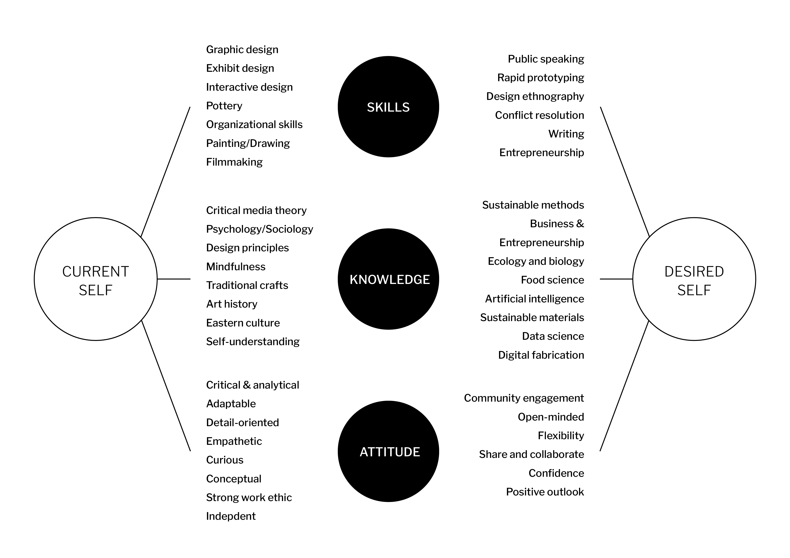
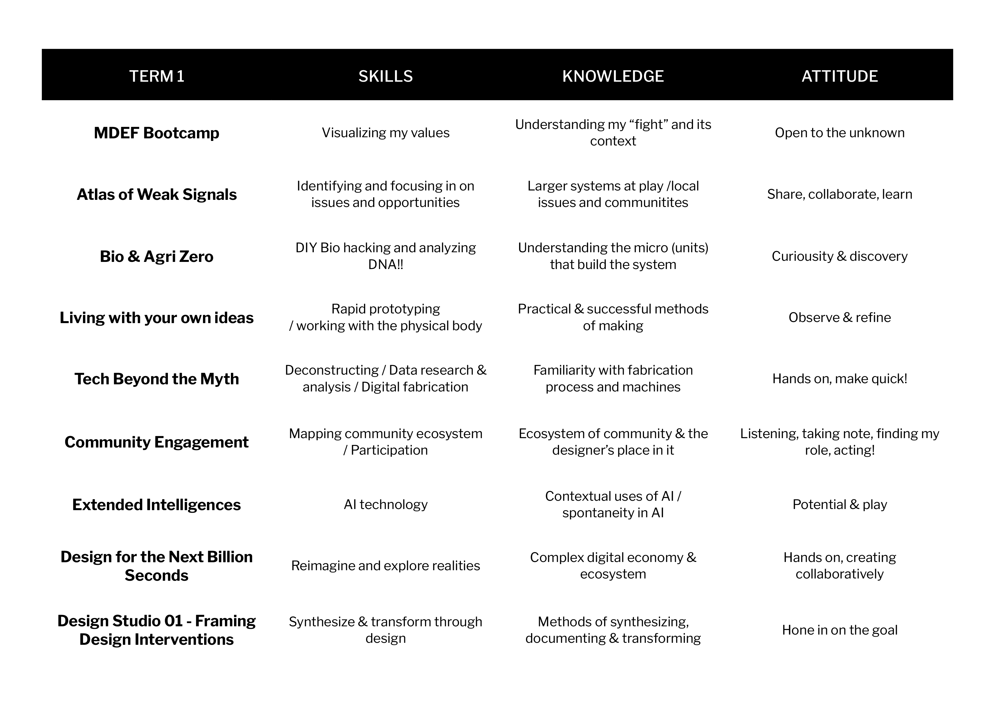

Bootcamp
In this first week, we got an introduction to the course, faculties, and the facilities of Iaac and Elisava along with some local organizations in Poblenou. It was a nice start to orient ourselves and get a peak of what's to come in the next few months.What is my fight?
We were asked to reflect on the question, "what is my fight?", and to create a poster from this prompt.
I struggled at first to distill my interests and narrow down into a singular "fight", and also to really connect with the word "fight" in this context.
Through some mind-mapping and reflection, I decided that my "fight" is not a singular topic that I'm interested in at the moment, but rather an accumulation of journeys, topics, and reflections that I've had throughout my life which brought me to this point.
As I started exploring my journey, I found some common threads throughout different points in my life.
Growing up in the 90's through the digital-technological revolution, I noticed I was not only experiencing the influence of technology, but evolving within my childhood.
The advent of technologies (esp in media and communication) formed the way I saw myself, interacted with others, and defined a lot of my choices as a child.
As I got older and started my education in graphic design, I was more conscious and critical of the impacts of modern technology.
And continuously until now, I feel I have experimented with different ways of living with technology, as I find
it controls us, and I want to use this technology to ask questions and reflect on our humanity. ...

1PP & Hybrid Profiles
We learned about designing from a first person perspective and the importance of engaging with the community early on in our design process.
This perspective was interesting because it contradicted the role of designer as problem-solver that I was used to. It challenged me to think about who we are “solving” these "problems" for, and if our ideas are actually helpful to the target community or individual.
We often fall into the trap of seeing ourselves as creators and problem solvers and the world as a big problem we need to solve. When the reality is that our minds are limited and the connections and sparks we can generate through real-life engagement and interactions (people, places and things),
can provide a depth of understanding, relevance, and unimagined pathways that we could not have thought of alone.
Following this lecture, we learned about the importance of understanding our skills, knowledge, and attitudes on a professional level. We jotted down our professional identities, then shared our qualities with our classmates.
With each share, I learned a new quality about another peorson and picked up a quality that I would like to have. This exercise provided a good platform to share about ourselves in ways that we normally wouldn’t.

Personal Development Plan
My personal plan for this term is to learn as much as I can from each of the seminars. I want to keep an open mind instead of focusing too deeply on one topic or area. Below is a matrix that maps out my goals for each of the courses in term 1.
